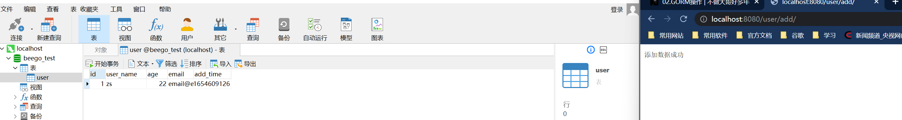
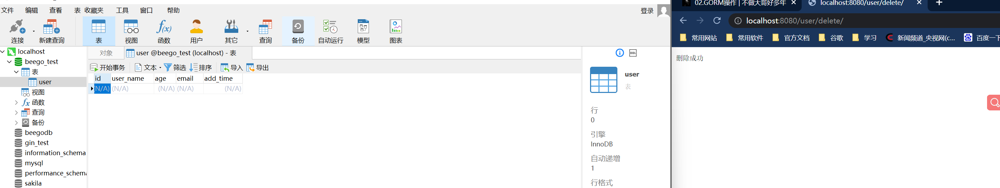
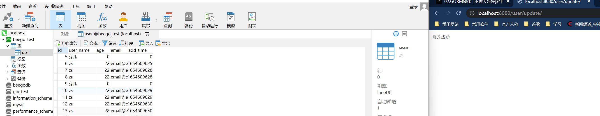
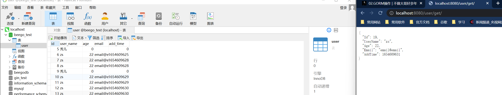
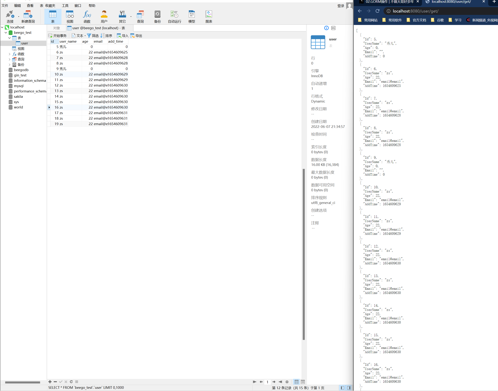

GORM操作
1. GORM介绍
1.1. GORM是什么
- GORM 是 golang 的一个 orm 框架，它是一个单独的 ORM 框架。
- 相比 beego 自带的 orm 框架，语法要更友好一些，关联查询更简单、功能更强大一些。
- 简单说，ORM 就是通过实例对象的语法，完成关系型数据库的操作的技术
- 是"对象-关系 映射"（Object/Relational Mapping） 的缩写
1.2. GORM功能介绍
Gorm 官方文档
- 全功能 ORM (无限接近)
- 关联 (Has One, Has Many, Belongs To, Many To Many, 多态)
- 钩子 (在创建/保存/更新/删除/查找之前或之后)
- 预加载
- 事务
- 复合主键
- SQL 生成器
- 数据库自动迁移
- 自定义日志
- 可扩展性, 可基于 GORM 回调编写插件
- 所有功能都被测试覆盖
- 开发者友好
1.3. 创建一个项目
bee new beegogorm
go mod init beegogorm
go build -mod=mod
2. GORM基本使用
2.1. 安装gorm
go get -u github.com/jinzhu/gorm
2.2. 建立数据库链接
package models
import (
"github.com/astaxie/beego"
"github.com/jinzhu/gorm"
_ "github.com/jinzhu/gorm/dialects/mysql"
)
var DB *gorm.DB
var err error
func init() {
DB, err = gorm.Open("mysql", "root:root@/beego_test?charset=utf8&parseTime=True&loc=Local")
if err != nil {
beego.Error()
}
}
2.3. 关闭数据库链接
package main
import (
"beegogorm/models"
_ "beegogorm/routers"
"github.com/astaxie/beego"
)
func main() {
beego.Run()
defer models.DB.Close()
}
2.4. 定义数据库模型
package models
type User struct {
Id int
UserName string
Age int
Email string
AddTime int
}
func (User) TableName() string {
return "user"
}
2.5. 自动创建表
models/core.go- 注意：GORM 的AutoMigrate函数，仅支持建表，不支持修改字段和删除字段，避免意外导致丢失数据。
- GORM更多用法
func init() {
DB, err = gorm.Open("mysql", "root:root@/beego_test?charset=utf8&parseTime=True&loc=Local")
if err != nil {
beego.Error()
}
if !DB.HasTable(&User{}) {
DB.CreateTable(&User{})
DB.Set("gorm:table_options", "ENGINE=InnoDB").CreateTable(&User{})
}
}
3. GORM增删改查
3.1. 基本增删改查
package controllers
import (
"beegogorm/models"
"github.com/astaxie/beego"
"time"
)
type UserController struct {
beego.Controller
}
func (c *UserController) UserAdd() {
user := models.User{
UserName: "zs",
Age: 22,
Email: "email@email",
AddTime: int(time.Now().Unix()),
}
models.DB.Create(&user)
c.Ctx.WriteString("添加数据成功")
}
func (c *UserController) UserDelete() {
user := models.User{Id: 1}
models.DB.Delete(&user)
c.Ctx.WriteString("删除成功")
}
func (c *UserController) UserUpdate() {
user := models.User{Id: 9}
user.UserName = "秀儿"
models.DB.Save(&user)
c.Ctx.WriteString("修改成功")
}
func (c *UserController) GetUser() {
var user []models.User
models.DB.Find(&user)
c.Data["json"] = user
c.ServeJSON()
}
3.2. 定义路由
package routers
import (
"beegogorm/controllers"
"github.com/astaxie/beego"
)
func init() {
beego.Router("/user/add/", &controllers.UserController{},"get:UserAdd")
beego.Router("/user/delete/", &controllers.UserController{},"get:UserDelete")
beego.Router("/user/edit/", &controllers.UserController{},"get:UserEdit")
beego.Router("/user/select/", &controllers.UserController{},"get:UserSelect")
}
添加
删除修改查询